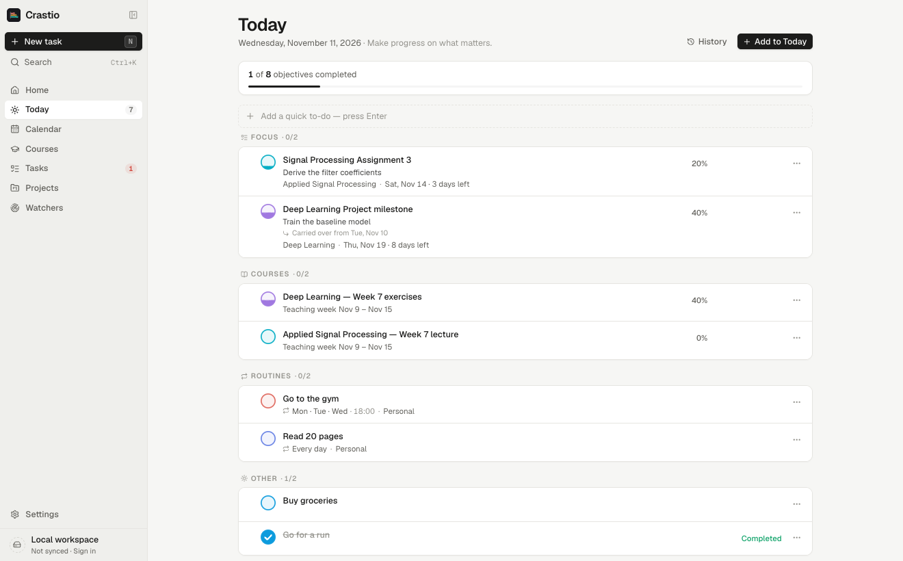
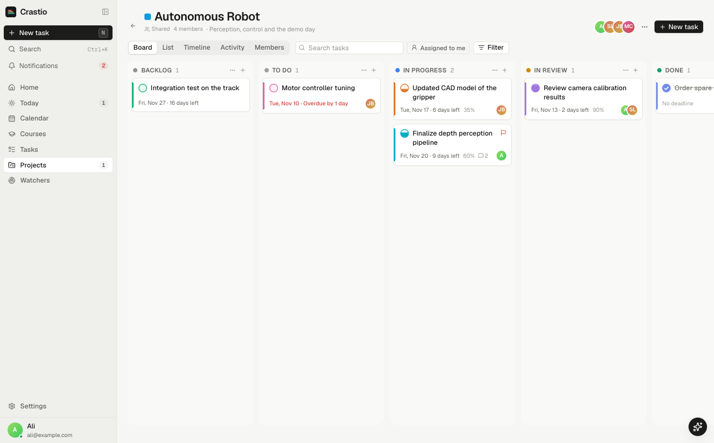

Today links to your tasks, course work and routines instead of copying them. Mark something done for today, or done for good. Yesterday's unfinished items come back on their own.

A deadline is a ribbon to its due date, with an optional start date. A scheduled activity is a dot on its day, and can repeat: daily, weekly, monthly.
Fill the bubble from 0 to 100 %. Reminders arrive as system notifications, even when the window is closed.
Share a project with other Crastio accounts. Everyone sees the project; nobody sees your personal planner.
Add, rename, colour and reorder columns. Dropping a card into a Done column completes it.
Owner, admin, member, viewer — enforced by the server, not just the app. Invite by email or with a single-use code.
Work assigned to you appears in your Tasks, Today and calendar.

These features run in Crastio's cloud and need an account. Each one explains what it reads before you turn it on.
Read-only. New messages and announcements that contain a clear deadline become tasks you can undo. Crastio never sends email.
A hosted model reads the relevant parts of new items. It will open gradually: each account has its own daily allowance.
With a token you create and can revoke, an assistant reads your planner and proposes plans. You approve them in Crastio.
macOS 12 (Monterey) or later — Apple Silicon and Intel. Windows 10 or 11, 64-bit (x64). Light and dark themes. Export everything to JSON or your tasks to CSV at any time.